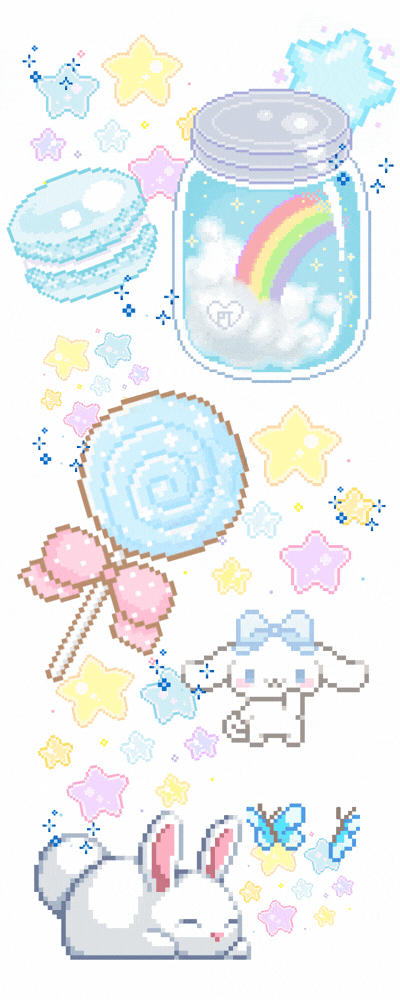

“My eye, your world.”
Blog by Amitiel
₊˚ ‿︵‿︵‿︵୨୧ · · ♡ · · ୨୧‿︵‿︵‿︵ ˚₊
|  |
Welcome to my photography blog—a space where every frame tells a story.
Here, I share the world as I see it through my lens: the play of light and shadow, the fleeting expressions, and the quiet beauty hidden in everyday moments. Photography, for me, is more than just capturing images; it’s about preserving emotions and translating them into visual narratives that speak without words. Whether it’s a candid street shot, a breathtaking landscape, or an intimate portrait, each photo is a piece of my journey and perspective.
This blog is both a gallery and a diary of my creative exploration. You’ll find not only my favorite shots but also reflections on the process, the inspirations behind each capture, and the lessons learned along the way. My goal is to invite you into my world of visual storytelling—where pixels become poetry, and every click of the shutter is an attempt to freeze time. I hope these images spark curiosity, stir emotions, and remind you of the beauty that surrounds us every day. |